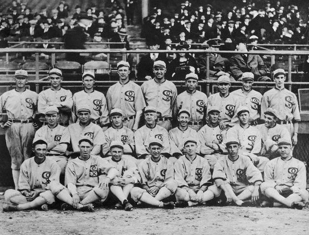
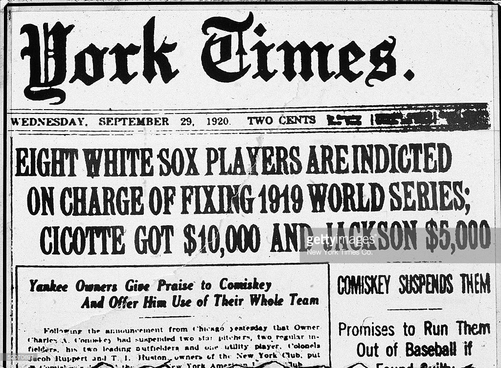
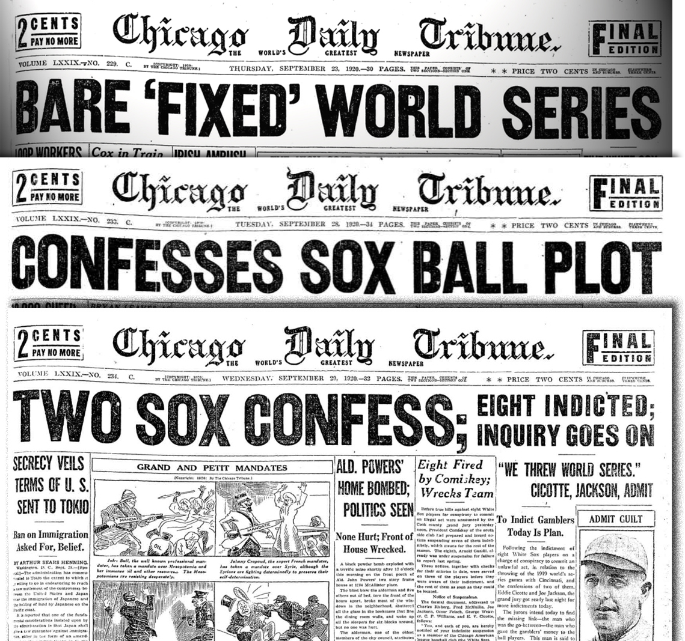

The Black Sox Scandal was a Major League Baseball match fixing incident in which eight members of the Chicago White Sox were accused of intentionally losing the 1919 World Series against the Cincinnati Reds in exchange for money from gamblers. The fallout from the scandal resulted in the appointment of Judge Kenesaw Mountain Landis as the first Commissioner of Baseball, granting him absolute control over the sport in order to restore its integrity. Despite acquittals in a public trial in 1921, Judge Landis permanently banned all eight men from professional baseball. Despite requests for reinstatement in the decades that followed (particularly in the case of Shoeless Joe Jackson), the ban remains in force as of 2017.
  